비비고연간 유튜브 콘텐츠영상 보기2021프로젝트 기여도 10/10비비고 — 연간 유튜브 콘텐츠 기획제철 요리·랭킹쇼·사연 도시락 등 서로 다른 포맷으로 브랜드의 연간 유튜브 콘텐츠를 설계했습니다. Farm to Table 12편을 포함해 총 약 20편의 영상이 유튜브에 업로드되었습니다.한 일연간 컨셉 제안, 시리즈별 시놉시스 구성결과 · 의미소셜아이어워드 2021 식품 유튜브 분야 대상작업 이미지 · 영상 더 보기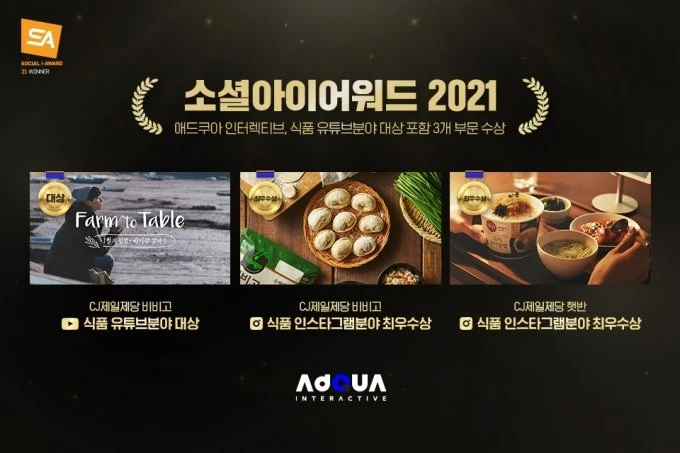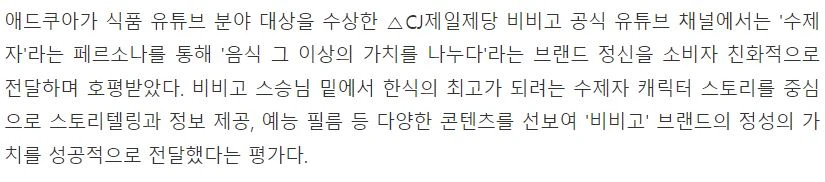영상 01영상 02영상 03영상 04영상 05영상 06영상 07영상 08영상 09
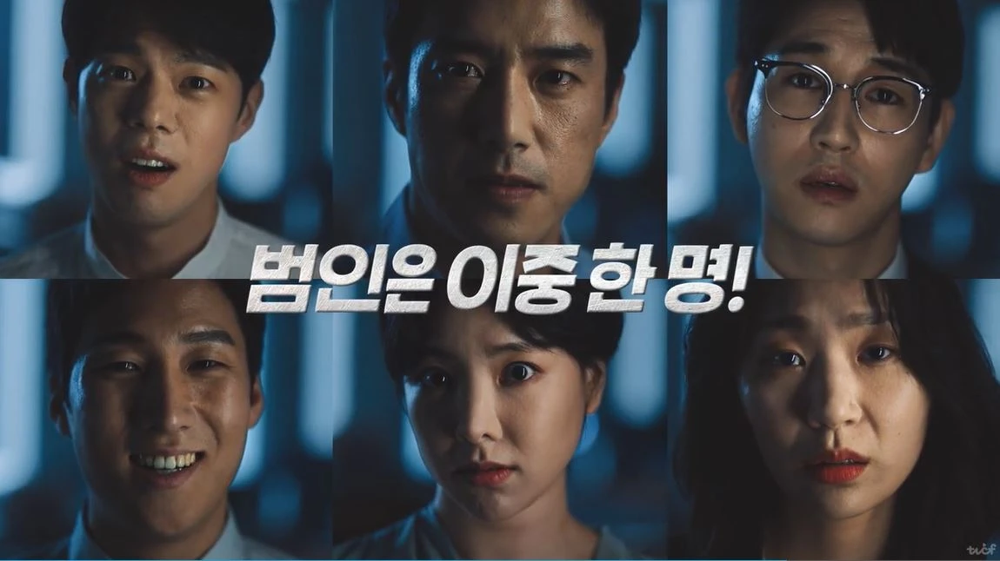2019 — 2022 · 재직 기간 내프로젝트 기여도 7/10햇반컵반 — 명탐정컵반즈Z세대가 직접 퀴즈를 풀고 팝업스토어를 찾는, 온·오프라인 참여형 캠페인입니다.“먹으면 반햇, 햇반컵반햇”한 일티저 구조, 모델 나문희 제안, 컨셉 디테일결과 · 의미디지털 영상 18개와 팝업·크리에이터 협업으로 접점 확장작업 이미지 · 영상 더 보기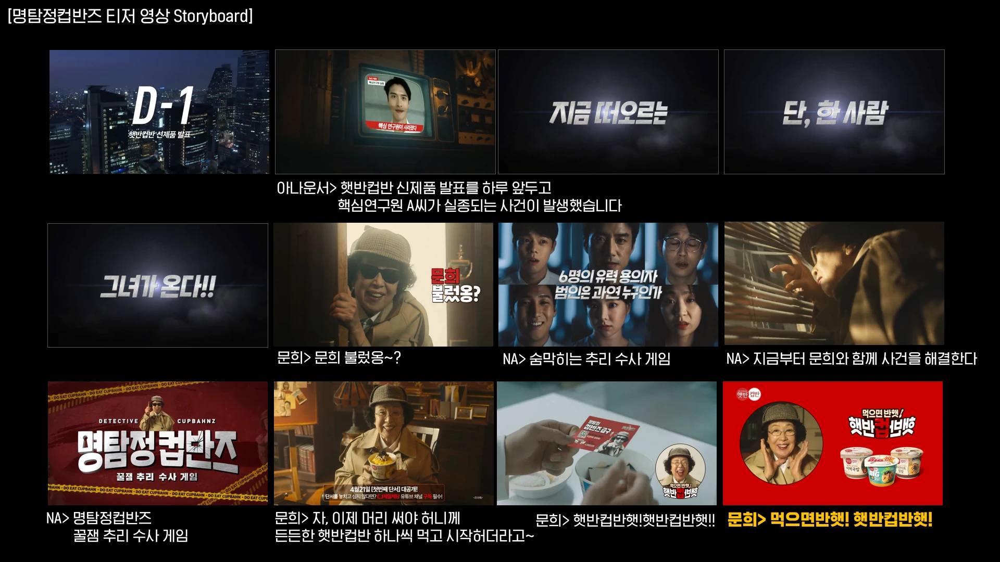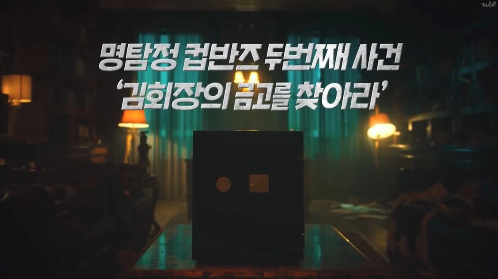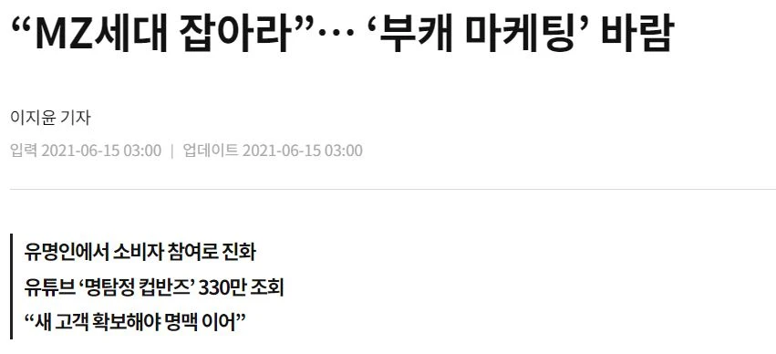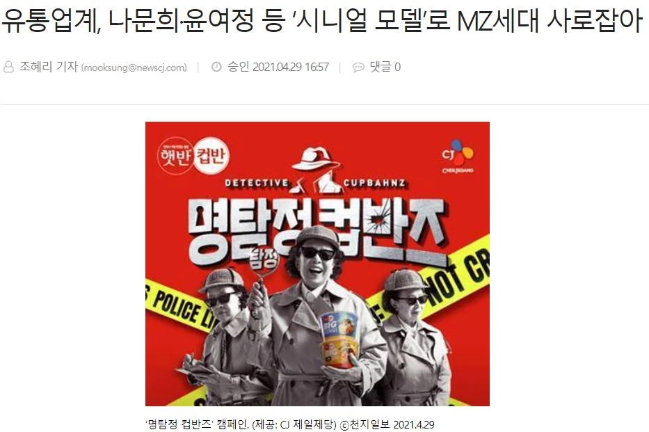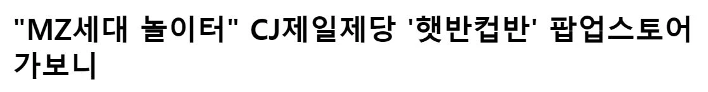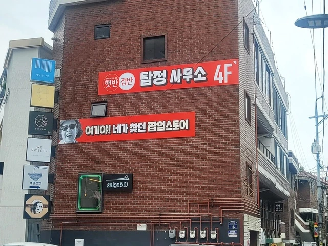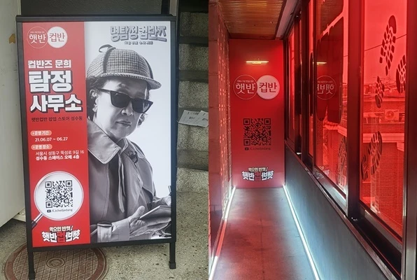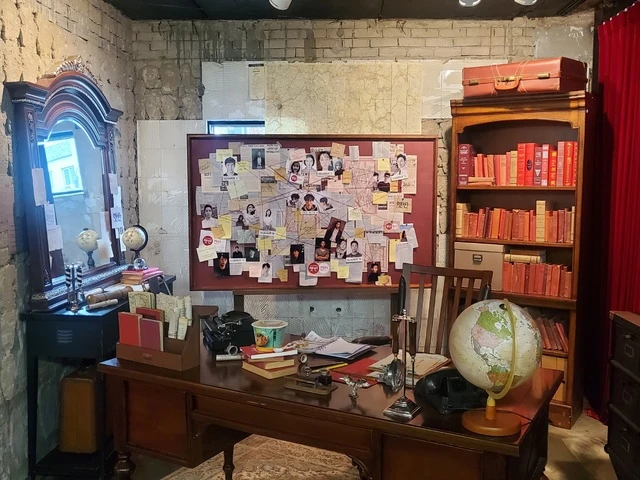영상 01영상 02영상 03
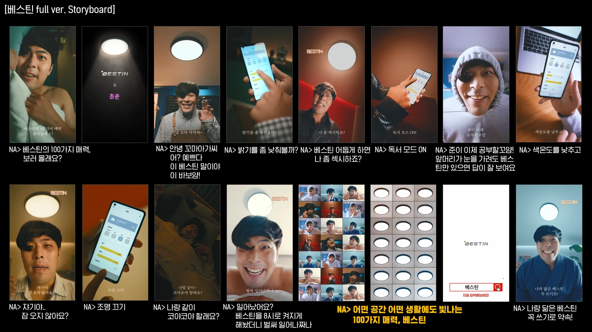2019 — 2022 · 재직 기간 내프로젝트 기여도 10/10베스틴 — 100가지 빛의 매력최준의 캐릭터와 조명의 100가지 빛 조절 기능을 연결했습니다.“어떤 공간 어떤 생활에도 빛나는 100가지 매력, 베스틴”한 일전체 캠페인 아이디어·카피라이팅결과 · 의미첫 제안한 아이디어를 실제 캠페인으로 구현작업 이미지 · 영상 더 보기영상 01영상 02영상 03
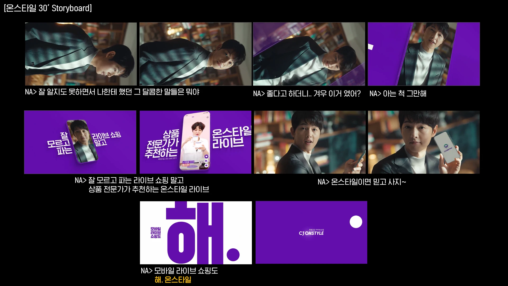2019 — 2022 · 재직 기간 내프로젝트 기여도 6/10CJ온스타일 — 해. 온스타일검증된 상품 전문가와 끝까지 이어지는 소통을, 라이브 쇼핑의 차별점으로 전달했습니다.“해. 온스타일”한 일광고 컨셉 제안, 일부 카피라이팅결과 · 의미홈쇼핑의 강점을 라이브 쇼핑의 언어로 전환작업 이미지 · 영상 더 보기영상 01영상 02
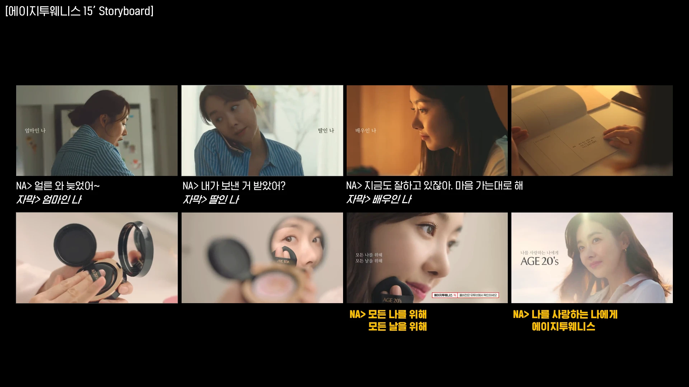2019 — 2022 · 재직 기간 내프로젝트 기여도 9/10AGE 20’s — 나를 사랑하는 나에게제품 시연을 넘어, 자신을 잃지 않으려는 여성의 마음에 공감하는 브랜드 메시지를 만들었습니다.“나를 사랑하는 나에게”한 일전체 컨셉, 바디카피·키카피라이팅결과 · 의미드라마타이즈 구성으로 브랜드의 공감 메시지 전달작업 이미지 · 영상 더 보기영상 01영상 02
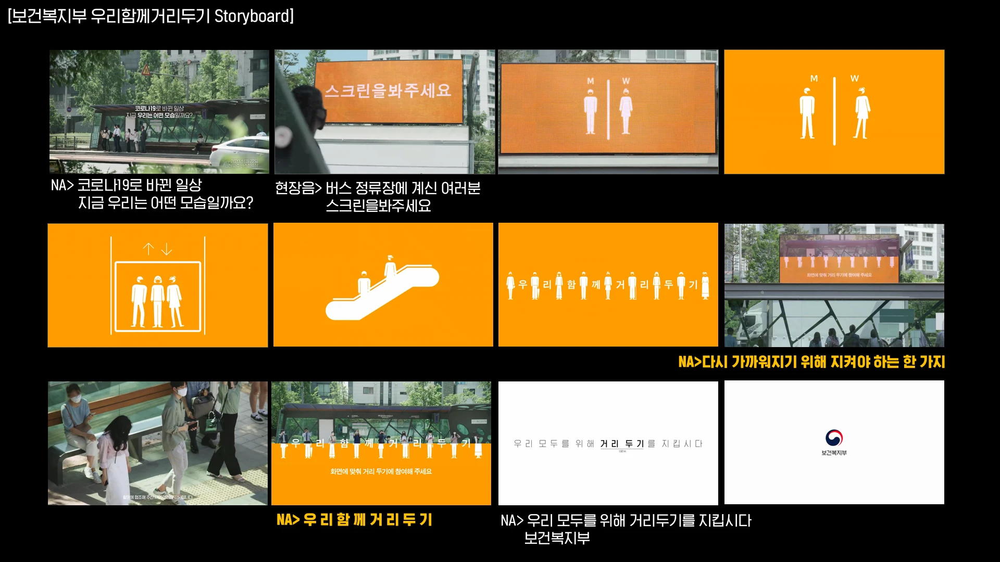2020프로젝트 기여도 6/10보건복지부 — 우리 함께 거리두기일방적인 수칙 안내에서 벗어나, 시민이 직접 참여하는 거리두기 캠페인을 제안했습니다.한 일트럭 스크린을 활용한 시민 참여 구성 제안결과 · 의미온라인 광고대상·서울영상광고제·디지털 애드 어워즈 수상작업 이미지 · 영상 더 보기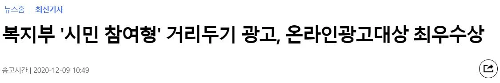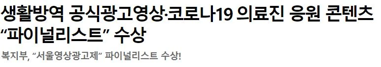영상 01영상 02
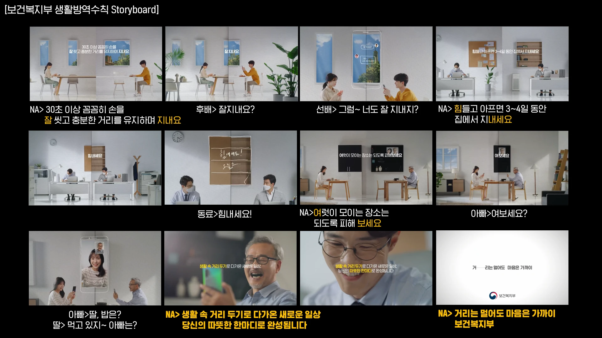2020 · 생활방역 캠페인프로젝트 기여도 5/10보건복지부 — 거리는 멀어도 마음은 가까이예방 수칙에 담긴 서로를 배려하는 마음을, 접히는 영상 구조와 언어로 전달했습니다.한 일카피라이팅결과 · 의미생활방역 수칙을 공감할 수 있는 메시지로 정리
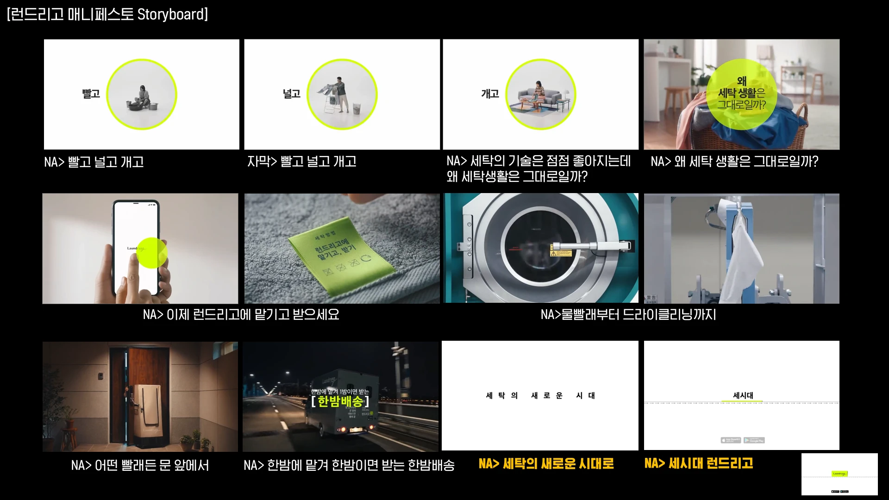2019 — 2022 · 재직 기간 내프로젝트 기여도 8/10런드리고 — 세탁의 새로운 시대브랜드 인지도를 위한 매니페스토와 타깃별 공감 소재를 함께 설계했습니다.“세탁의 새로운 시대, 세시대 런드리고”한 일키카피, 타깃 세분화 틀, SNS 캠페인 아이디어결과 · 의미타깃팅 소재 5개와 #OOTD 연계 참여 아이디어작업 이미지 · 영상 더 보기영상 01영상 02영상 03영상 04영상 05영상 06
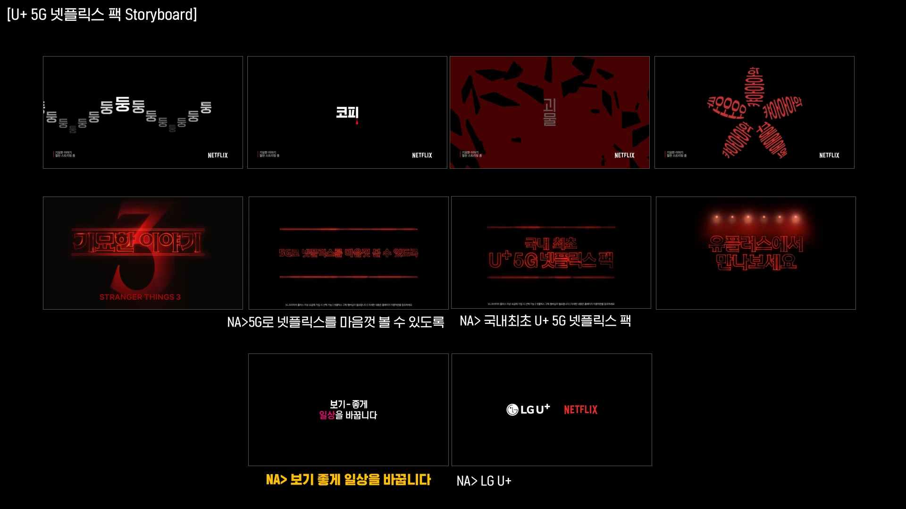2019 — 2022 · 재직 기간 내프로젝트 기여도 9/10LG U+ — 5G 넷플릭스 팩영상을 쓰기 어려운 조건에서, 자막과 사운드만으로 보고 싶은 마음을 자극했습니다.“보기 좋게 일상을 바꿉니다”한 일전체 캠페인 아이디어·카피라이팅결과 · 의미제약을 차별적인 광고 표현 방식으로 전환작업 이미지 · 영상 더 보기영상 01영상 02영상 03영상 04영상 05
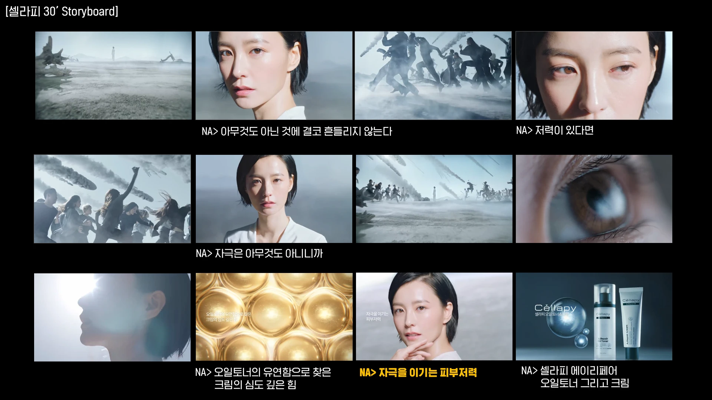2019 — 2022 · 재직 기간 내프로젝트 기여도 8/10셀라피 — 첫 PT 수주손상을 회복한다는 접근 대신, 자극에 흔들리지 않는 피부라는 관점을 제안했습니다.“아무것도 아닌 것에 흔들리지 않는다”한 일전체 광고 컨셉, 바디카피결과 · 의미입사 후 첫 프로젝트의 PT 수주작업 이미지 · 영상 더 보기영상 01영상 02